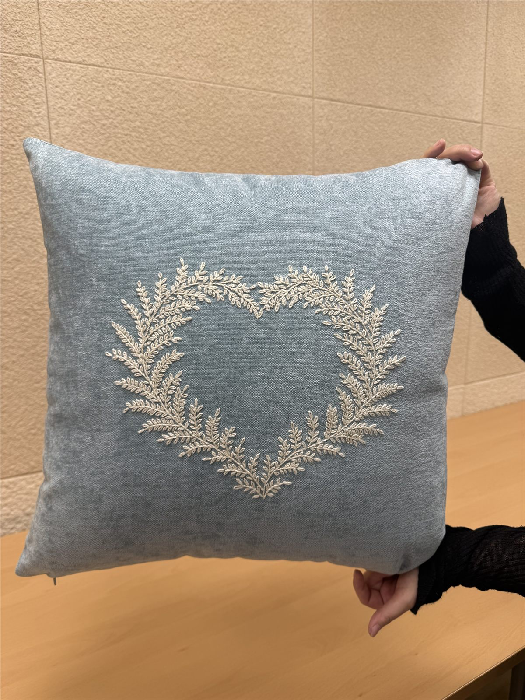
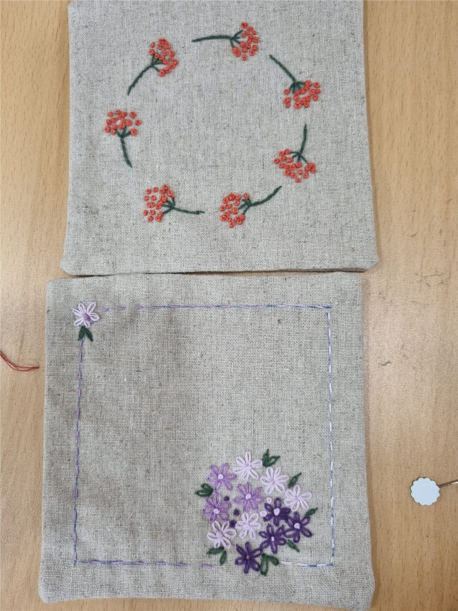
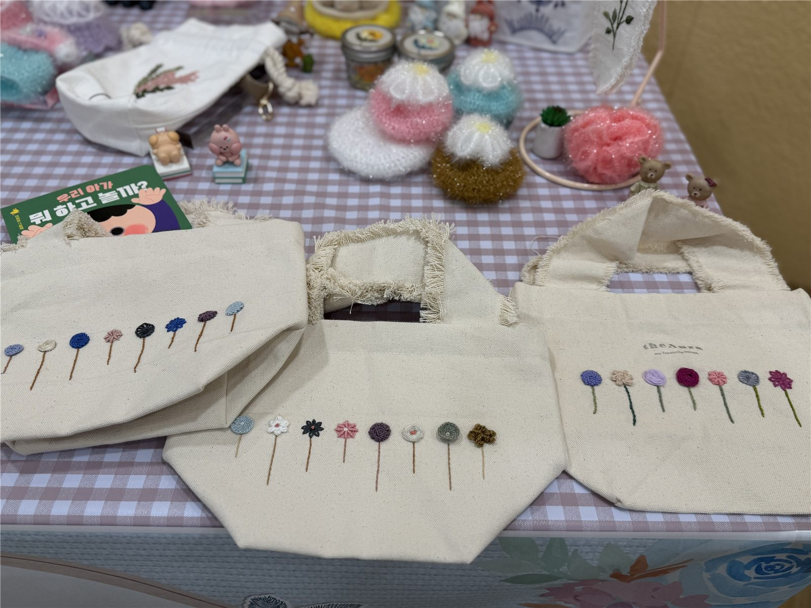
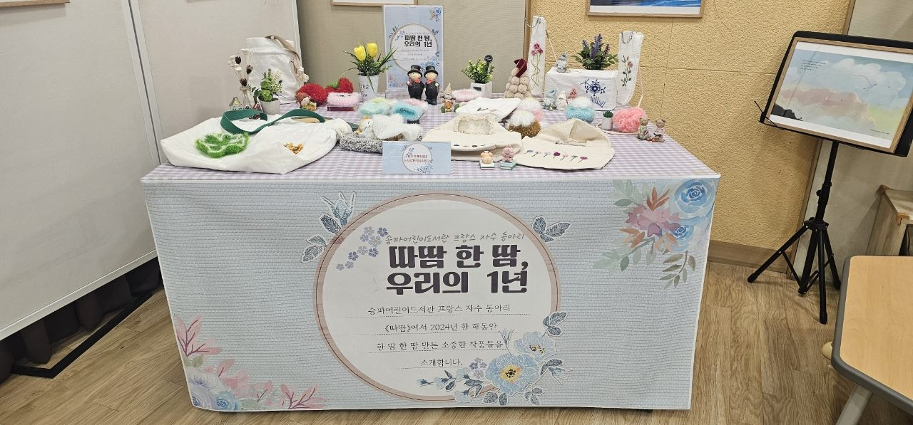

🪡
프랑스 자수
스템 스티치, 레이지데이지, 프렌치노트… 기본 스티치부터 하나씩 익혀 소품에 수를 놓아요.
‘따뜻한 한 땀’의 줄임말, 따땀.
스템 스티치, 레이지데이지, 프렌치노트… 기본 스티치부터 하나씩 익혀 소품에 수를 놓아요.
코바늘로 수세미, 컵받침, 인형 같은 작은 소품을 함께 떠요.
완성한 작품은 함께 모아 전시하고, 고마운 사람에게 선물로 전해요.
멤버들이 최근에 완성한 작품들이에요.




